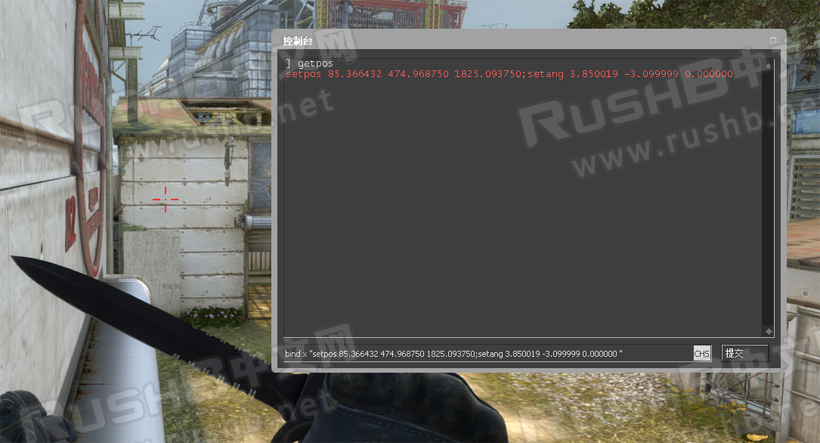
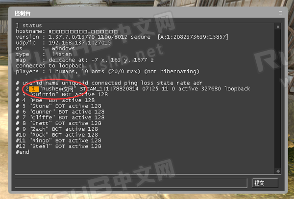
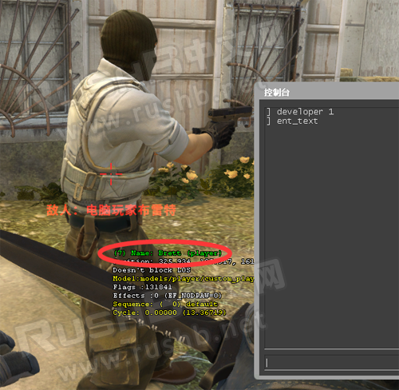
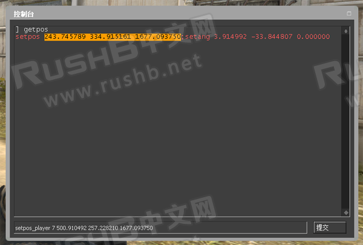
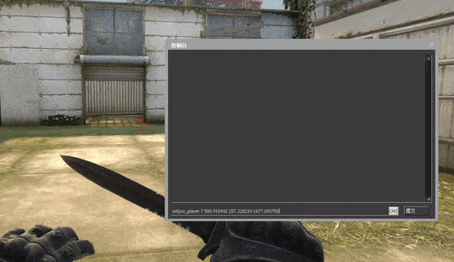
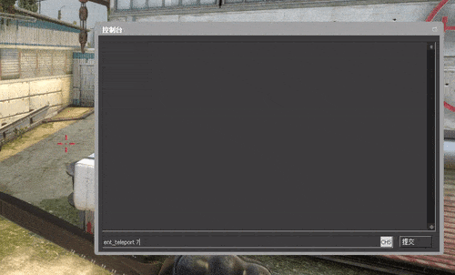

CSGO RushB中文网
CSGO RushB中文网
对于经常跑图的玩家来说，有时需要在同个地方频繁来回，比如练习Cache单人上山，查看爆烟爆闪是否精准、或是需要机器人/电脑/Bot站在指定位置，如果你想要的是将自己或是Bot快速移动（瞬移）到指定位置，推荐本文介绍的几个指令。
本文所列出的控制台指令只能在单机模式下或自建服务器使用，进入地图后需要先输入：sv_cheats 1
目前大部分玩家使用的是Bot放置指令：bot_place，不过这个指令只能把Bot放在眼前一个身位处，多次使用的话是把其他BOT也拉过来（比如你要放的是CT BOT，来的却是T BOT），并不能指定BOT或指定位置。
所以这里推荐两种指令：setpos_player和ent_teleport，不过在之前，我们还需要用到其他几个指令：
获取玩家当前的坐标（x/y/x）以及面朝方向
指令：getpos
使用方法，控制台输入：getpos，然后控制台会显示玩家的坐标和方向（红字），将整行红字复制，配合按键绑定，比如：
bind x "setpos 85.366432 474.968750 1825.093750;setang 3.850019 -3.099999 0.000000"
这样，按下X键后便马上传送到这个坐标，以及面朝这个方向，适合练习cache上山等。

获取玩家ID或BOT ID
注意，玩家ID和BOT ID获取方式不同。
获取玩家ID指令：status
使用方法，控制台输入：status，然后会显示服务器中所有玩家列表，玩家名字前面的数字就是玩家ID，比如图中的“RushB中文网”玩家是“1”。注意，如果是BOT的话，名字前面的ID并不对应，请看下方的获取BOT ID方法。

获取BOT ID指令：developer和ent_text
由于BOT和玩家属性不同，我们可以用其他方法获得BOT的实体ID，首先输入developer 1，然后准星对准想要传送的BOT，输入ent_text，然后便会显示BOT的实体属性，第一行name前面括号内的数字就是BOT ID，如图的BOT布雷特的ID为“7”。

如果觉得浮动文本碍事的话，获得ID后便可以输入developer 0关闭显示。
将指定玩家或BOT传送到指定坐标
指令：setpos_player
获得ID后，我们便可以将指定玩家或BOT传送到指定坐标，首先用getpos获得坐标，我们只要第一个分号前的三个数字（x/y/z），将其复制。

然后控制台输入：setpos_player ID x y z
例如要把布雷特（7）传送到坐标（500.910492 257.228210 1677.093750）：
setpos_player 7 500.910492 257.228210 1677.093750
如有需要的话同样可以绑定到按键上：
bind x "setpos_player ID x y z"
这样，指定玩家/BOT便会传送到这个坐标，不过要注意，坐标上方要有一定高度空间，否则传送的人物会卡在墙里。

将指定玩家或BOT传送到准星瞄准处
指令：ent_teleport
这个指令更加方便，玩家不用先跑去获得坐标，只需要鼠标准星对准要传送的位置即可，不过没有setpos_player那样精确到坐标。
使用方法：控制台输入ent_teleport id即可，比如把布雷特传送到准星瞄准处：
ent_teleport 7

同理，有需要的玩家可以绑定到按键上：
bind x "ent_teleport id"
注意，这个指令只能瞄准地面，如果是瞄准物体或墙壁的话，传送的人物可能会被卡住。